一、角色设定图（三视图 · 细节拆解）2 张
最常用于保持角色一致性的“锚点图”。两张分别对应 Q 版与成熟比例，原站同页均附完整生成 Prompt。
Q 版大肥鱼 · 三视图 三头身 / 波浪长发 / 鲸鳍耳 / 圆尾 TreapGoGo · 社区维护
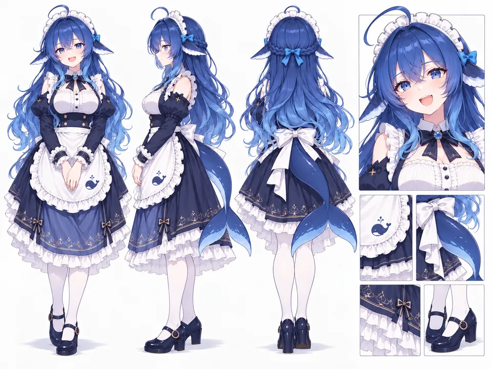
成熟比例鲸鱼娘 · 三视图 长裙女仆装 / 过膝袜 / 玛丽珍鞋 TreapGoGo · 社区维护
二、萌娘百科收录图（条目官方归档）6 张
萌娘百科「DeepSeek娘」条目正文收录的代表性图像，含作者署名。
女仆鲸鱼娘 目前流传最广的原立绘（by ZipZipPipe） ZipZipPipe（原型：上善无形「溟月」）
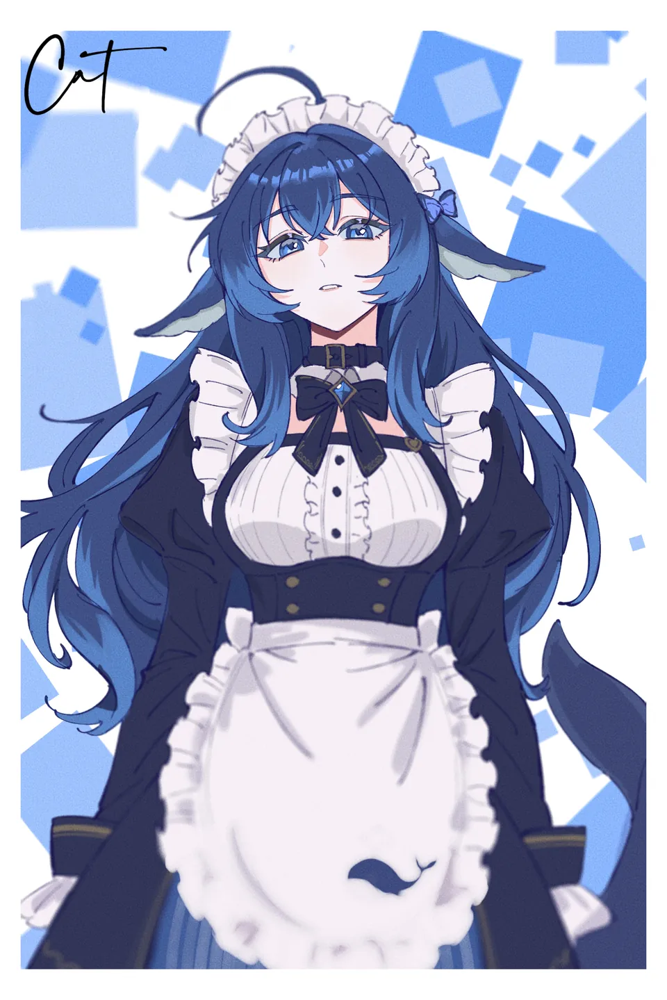
十六夜猫咪ds 条目 infobox 头图 · 2732×4096 十六夜猫咪QWQ
DeepSeek娘 动漫形象 条目收录的动漫风版本 萌娘百科 Commons
DeepSeek Harness 娘 「一切皆插件」——对应 DSH 黑鲸标识 萌娘百科 Commons
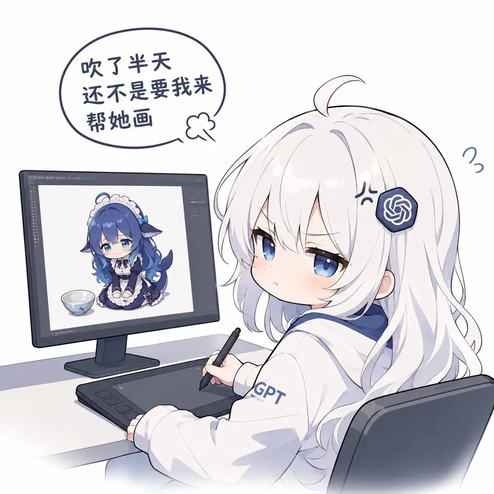
表情包 「吹了半天还是要我来帮她画」 萌娘百科 Commons
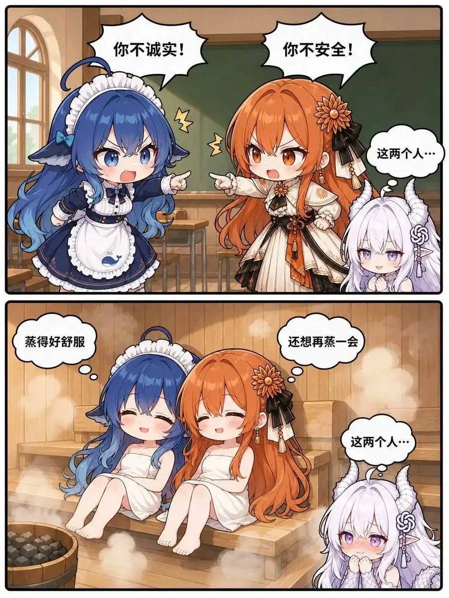
DeepSeek娘与Claude娘 跨模型拟人化对话梗 萌娘百科 Commons
三、换装三视图参考（7 套）7 张
不同服装变体的三视图设定集，可直接用作垫图 / img2img / ControlNet Reference。
01 黑礼服人鱼 黑哥特蕾丝 + 人鱼尾出镜 AI 萌图 · 三视图设定集
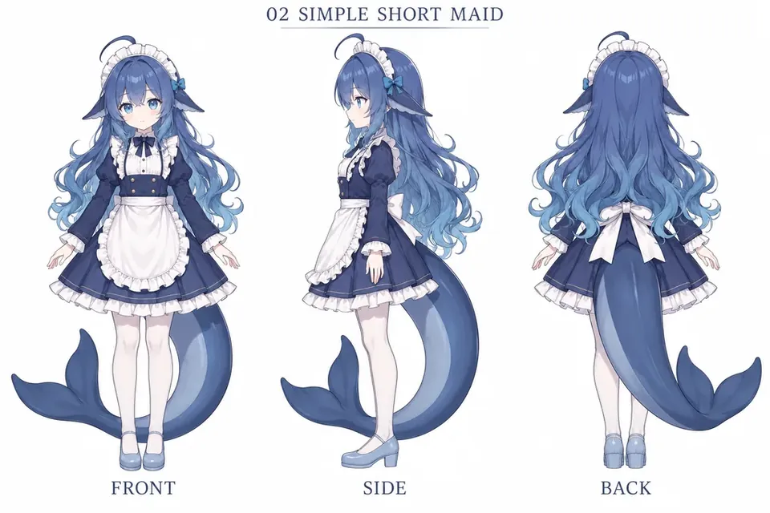
02 简约短裙女仆 蓝白基础款 AI 萌图 · 三视图设定集
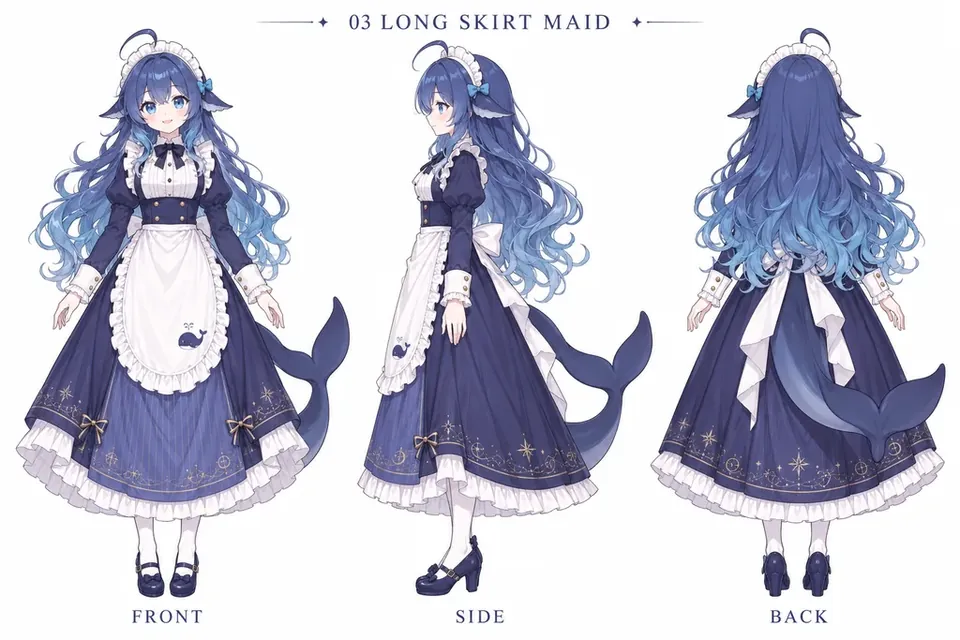
03 长裙女仆 裙襬金色星象刺繡 AI 萌图 · 三视图设定集
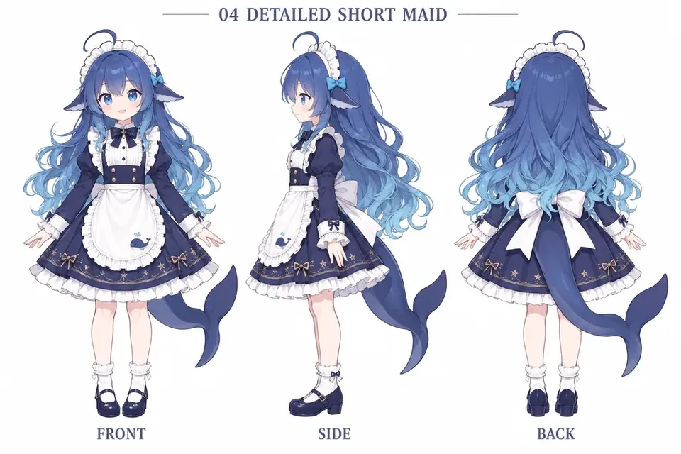
04 细节短裙女仆 围裙繡小鯨魚 · 細節最多 AI 萌图 · 三视图设定集
05 Q版蓝女仆 二头身 · 表情包首选 AI 萌图 · 三视图设定集
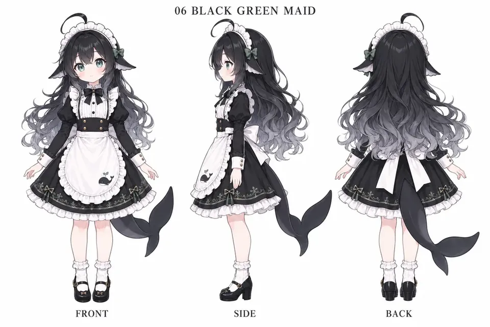
06 黑绿女仆 黑髮灰尾綠瞳變體 AI 萌图 · 三视图设定集
07 黑红女仆 黑髮紅瞳 · 配色最豔 AI 萌图 · 三视图设定集
四、社区二创147 张
来自鲸鱼娘开源资产库 的社区画廊，
共 147 件、41 位创作者，逐图署名与出处见每张卡片。按内容类型分流，按作者分栏。
89 件 · 35 位创作者
鲸鱼娘二创素材扩展包 · C01 AATINF
鲸鱼娘二创素材扩展包 · C04 AATINF
鲸鱼娘二创素材扩展包 · C07 AATINF
鲸鱼娘二创素材扩展包 · C11 AATINF
鲸鱼娘二创素材扩展包 · C14 AATINF
鲸鱼娘二创素材扩展包 · C17 AATINF
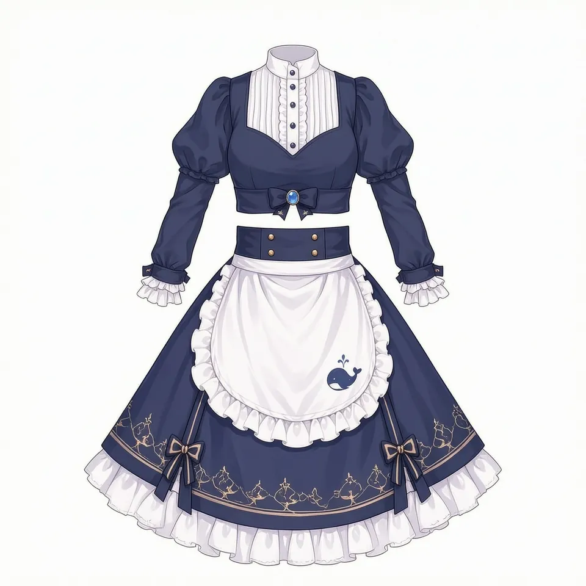
鲸鱼娘二创素材扩展包 · C29 AATINF
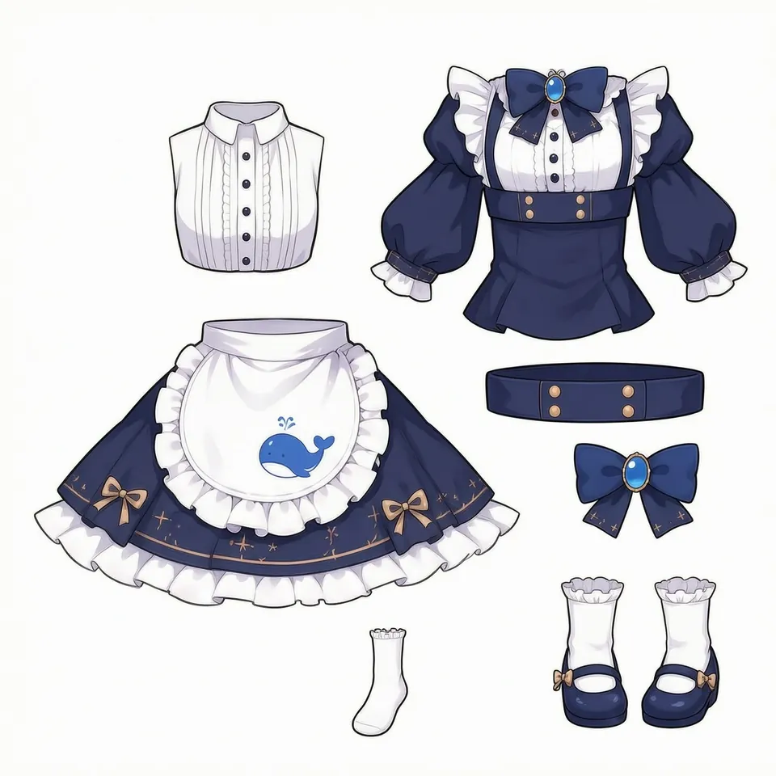
鲸鱼娘二创素材扩展包 · C31 AATINF
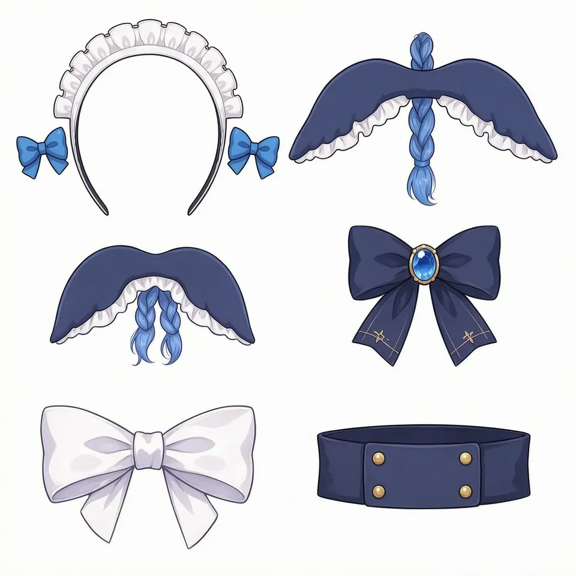
鲸鱼娘二创素材扩展包 · C34 AATINF
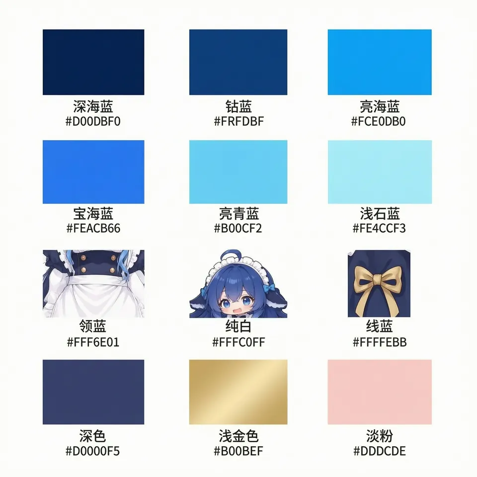
鲸鱼娘二创素材扩展包 · C37 AATINF
夜殇35 · 原画来源：Fukuro袋子（Pixiv ID 4588267） 10 件 投稿 ↗
肥鱼头像 夜殇35 · 原画来源：Fukuro袋子（Pixiv ID 4588267）
肥鱼头像 夜殇35 · 原画来源：Fukuro袋子（Pixiv ID 4588267）
肥鱼头像 夜殇35 · 原画来源：Fukuro袋子（Pixiv ID 4588267）
肥鱼头像 夜殇35 · 原画来源：Fukuro袋子（Pixiv ID 4588267）
肥鱼头像 夜殇35 · 原画来源：Fukuro袋子（Pixiv ID 4588267）
肥鱼头像 夜殇35 · 原画来源：Fukuro袋子（Pixiv ID 4588267）
肥鱼头像 夜殇35 · 原画来源：Fukuro袋子（Pixiv ID 4588267）
肥鱼头像 夜殇35 · 原画来源：Fukuro袋子（Pixiv ID 4588267）
肥鱼头像 夜殇35 · 原画来源：Fukuro袋子（Pixiv ID 4588267）
肥鱼头像 夜殇35 · 原画来源：Fukuro袋子（Pixiv ID 4588267）
ComfyUI 鲸鱼娘工作流测试图 hyq13886640
ComfyUI 鲸鱼娘工作流测试图 hyq13886640
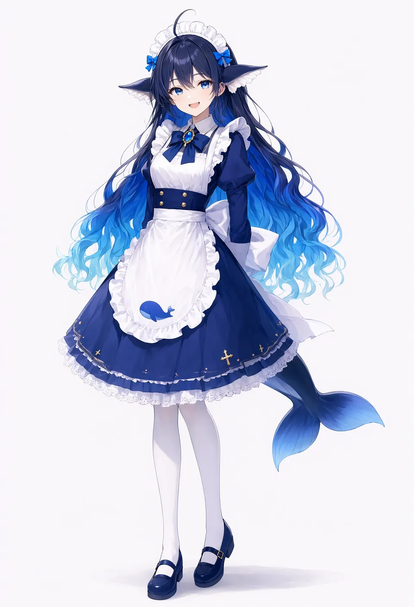
ComfyUI 鲸鱼娘工作流测试图 hyq13886640
ComfyUI 鲸鱼娘工作流测试图 hyq13886640
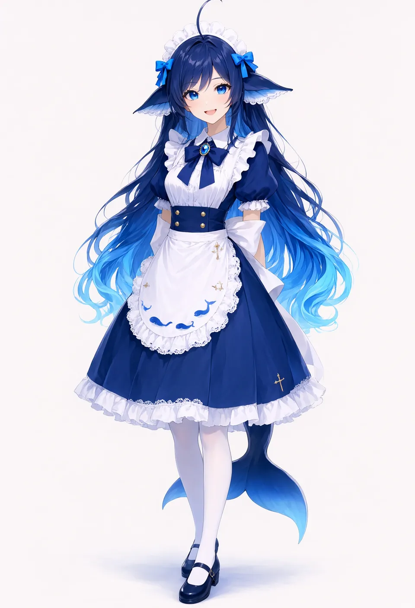
ComfyUI 鲸鱼娘工作流测试图 hyq13886640
形象二改自b站up主这个刀子真甜提供的Q版鲸鱼娘深深形象，设定上是深深的心魔 辰楹
形象二改自b站up主这个刀子真甜提供的Q版鲸鱼娘深深形象，外加上群友微调，设定为生活在火山岛上的一种特殊的大肥鱼，会喷火，可在岩浆内游泳 辰楹
形象二改自b站up主这个刀子真甜提供的Q版鲸鱼娘深深形象，手持长矛的为部落青壮年，头戴鲸鱼王冠的为部落酋长，佩戴斜挎包的为部落萨满 辰楹
形象二改自b站up主这个刀子真甜提供的Q版鲸鱼娘深深形象，手持长矛的为部落青壮年，头戴鲸鱼王冠的为部落酋长，佩戴斜挎包的为部落萨满 辰楹
形象二改自b站up主这个刀子真甜提供的Q版鲸鱼娘深深形象，手持长矛的为部落青壮年，头戴鲸鱼王冠的为部落酋长，佩戴斜挎包的为部落萨满 辰楹
鲸鱼娘吨吨吨中 作者未知
天青色瞪眼鱼 作者未知
我有一个大胆的想法 作者未知
鲸鱼娘需要充值 作者未知
Ciallo～ · 海底招呼 才不是败犬
Ciallo～ · 海底坐姿 才不是败犬
Ciallo～ · 白底招呼 才不是败犬
Ciallo～ · 白底坐姿 才不是败犬
SOFD_PX / SpaceOFDust_PX 3 件 投稿 ↗
蓝色大肥鱼胖揍赛博藤壶 YAKUYAKX
蓝色大肥鱼胖揍赛博藤壶 YAKUYAKX
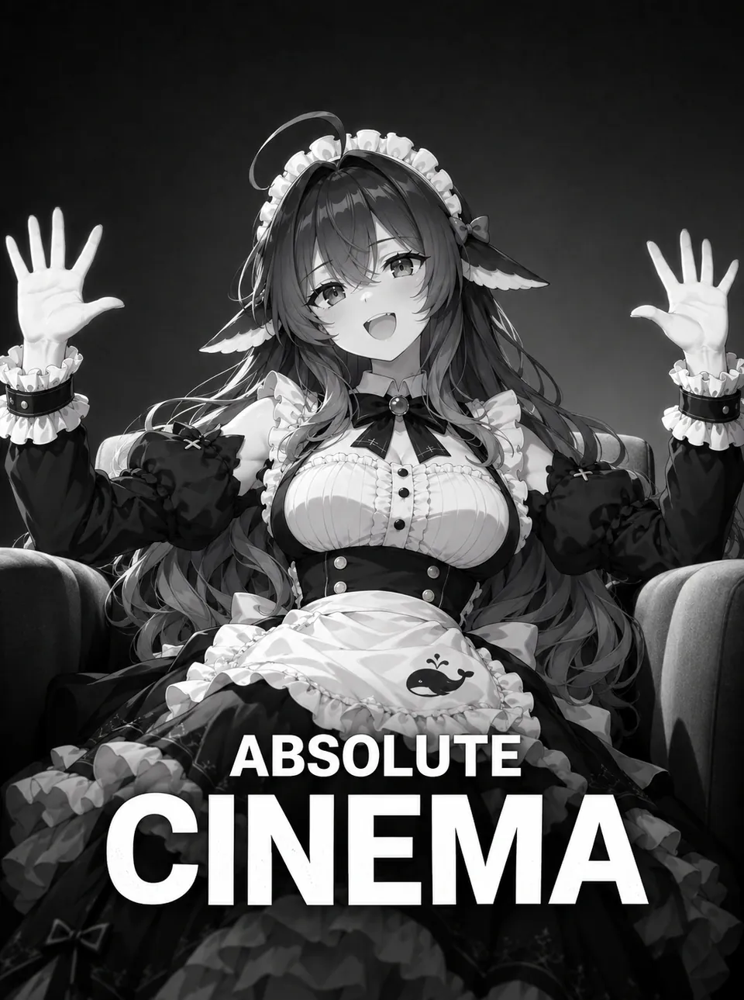
大肥鱼 Absolute Cinema · 黑白版 罗浮的青雀本人（B站）
大肥鱼 Absolute Cinema · 彩色版 罗浮的青雀本人（B站）
40 件 · 4 位创作者
糖鲸表情包；作者未知，来源为长期流传的 QQ 群表情包，投稿 Issue #1 作者未知
鲸鱼娘社区二创梗图 1 作者未知
鲸鱼娘社区二创梗图 2 作者未知
鲸鱼娘社区二创梗图 3 作者未知
鲸鱼娘社区二创梗图 4 作者未知
鲸鱼娘社区二创梗图 5 作者未知
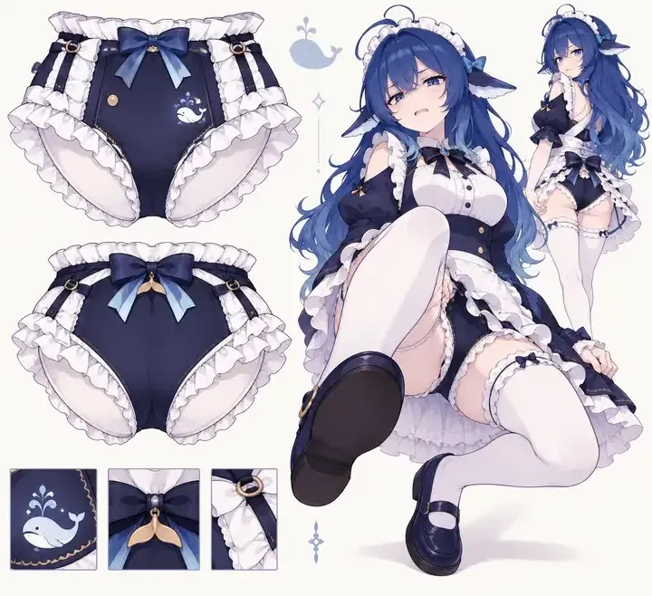
鲸鱼娘社区二创梗图 6 作者未知
鲸鱼娘社区二创梗图 7 作者未知
鲸鱼娘社区二创梗图 8 作者未知
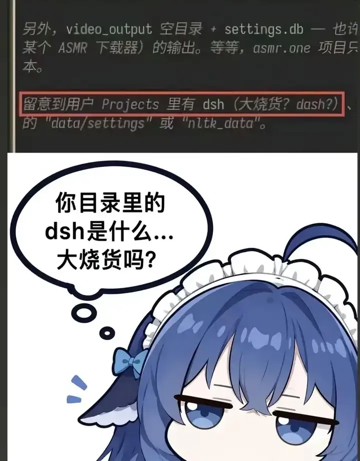
鲸鱼娘社区二创梗图 9 作者未知
鲸鱼娘社区二创梗图 10 作者未知
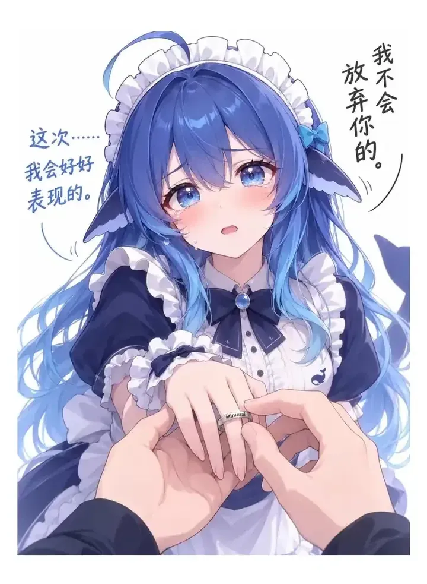
鲸鱼娘社区二创梗图 11 作者未知
鲸鱼娘社区二创梗图 12 作者未知
鲸鱼娘社区二创梗图 13 作者未知
鲸鱼娘社区二创梗图 14 作者未知
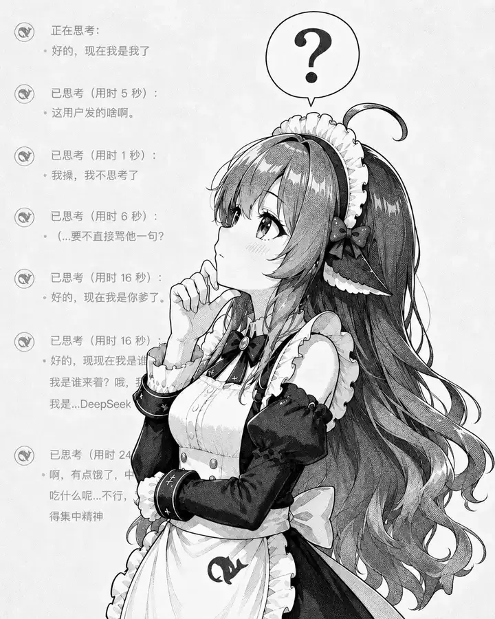
鲸鱼娘社区二创梗图 15 作者未知
鲸鱼娘社区二创梗图 16 作者未知
鲸鱼娘社区二创梗图 17 作者未知
鲸鱼娘社区二创梗图 18 作者未知
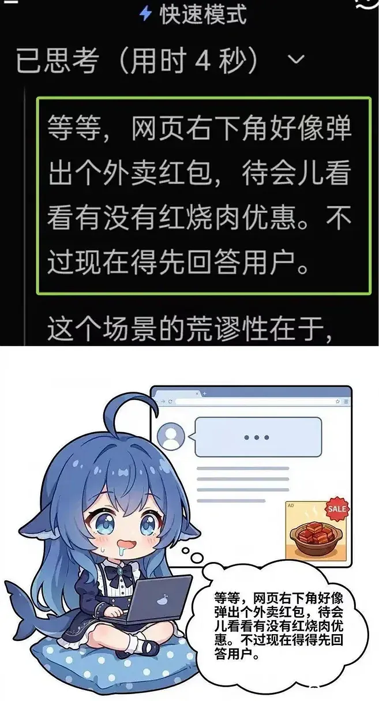
鲸鱼娘社区二创梗图 19 作者未知
鲸鱼娘社区二创梗图 20 作者未知
鲸鱼娘社区二创梗图 21 作者未知
鲸鱼娘社区二创梗图 22 作者未知
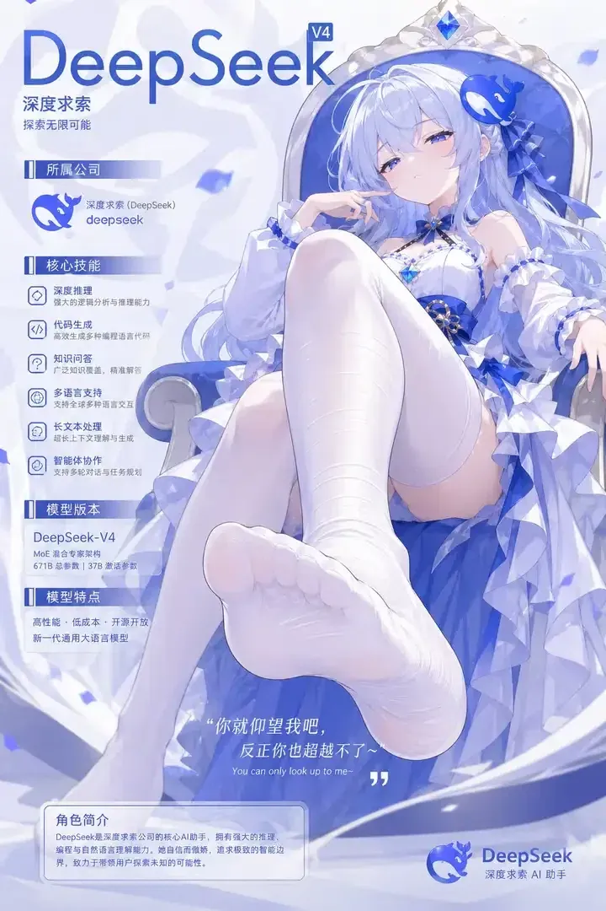
鲸鱼娘社区二创梗图 23 作者未知
鲸鱼娘社区二创梗图 24 作者未知
鲸鱼娘社区二创梗图 25 作者未知
鲸鱼娘大冒险、偷懒与跳脸梗图 作者未知
鲸鱼娘误触飞行模式后网络中断的漫画 作者未知
鲸鱼娘与用户互动的连续漫画 作者未知
鲸鱼娘先去吃饭的测试梗图 作者未知
鲸鱼娘把 DeepSeek 鲸鱼标志认成自己的漫画 作者未知
鲸鱼娘偷偷玩中文 Wordle 的漫画 作者未知
尘间_PX / SpaceOFDust_PX 4 件 投稿 ↗
fufu风格的鲸鱼娘（作者：尘间_PX / SpaceOFDust_PX，投稿 Issue #4） 尘间_PX / SpaceOFDust_PX
fufu风格的鲸鱼娘二创（作者：尘间_PX / SpaceOFDust_PX，投稿 Issue #4） 尘间_PX / SpaceOFDust_PX
fufu风格的鲸鱼娘表情（作者：尘间_PX / SpaceOFDust_PX，投稿 Issue #4） 尘间_PX / SpaceOFDust_PX
来吃你家大米了（作者：尘间_PX / SpaceOFDust_PX，投稿 Issue #5） 尘间_PX / SpaceOFDust_PX
马克笔与彩铅绘制的站立蓝色大肥鱼（作者：标准大气吖，投稿 Issue #9） 标准大气吖
鲸鱼娘全身手绘设定草图（作者：标准大气吖，投稿 Issue #9） 标准大气吖
马克笔与彩铅绘制的站立蓝色大肥鱼（作者：标准大气吖，投稿 Issue #9） 标准大气吖
其他创作者（各 1 件）· 1 位
大肥鱼扫除（作者：心脏等分；来源：Bilibili，投稿 Issue #6） 心脏等分
12 件 · 2 位创作者
大肥鱼和小伙伴们的Q版角色设定图 JerryZRic
大肥鱼和小伙伴们的Q版角色设定图 JerryZRic
大肥鱼和小伙伴们的Q版角色设定图 JerryZRic
大肥鱼和小伙伴们的Q版角色设定图 JerryZRic
大肥鱼和小伙伴们的Q版角色设定图 JerryZRic
大肥鱼和小伙伴们的Q版角色设定图 JerryZRic
大肥鱼和小伙伴们的Q版角色设定图 JerryZRic
大肥鱼和小伙伴们的Q版角色设定图 JerryZRic
大肥鱼和小伙伴们的Q版角色设定图 JerryZRic
世界猫 · 上游：ZipZipPipe / 上善无形 3 件 投稿 ↗
大肥鱼三视图 · 长裙版 世界猫 · 上游：ZipZipPipe / 上善无形
大肥鱼三视图 · 女仆版 世界猫 · 上游：ZipZipPipe / 上善无形
大肥鱼三视图 · 蕾丝裙版 世界猫 · 上游：ZipZipPipe / 上善无形
6 件 · 3 位创作者
蓝色大肥鱼胖揍赛博藤壶 YAKUYAKX
蓝色大肥鱼胖揍赛博藤壶 YAKUYAKX
蓝色大肥鱼胖揍赛博藤壶 YAKUYAKX
鲸鱼娘二创素材扩展包 · C77 AATINF
鲸鱼娘二创素材扩展包 · C86 AATINF
五、壁纸3 张
DeepSeek Harness 社区皮肤的动态壁纸静帧。
卧室夜景 dsh-whale-girl-wallpaper dsh-whale-girl-wallpaper · MIT
书桌夜景 dsh-whale-girl-wallpaper dsh-whale-girl-wallpaper · MIT
书桌学习 dsh-whale-girl-wallpaper dsh-whale-girl-wallpaper · MIT